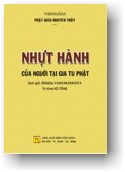

|
BuddhaSasana Home Page |
Vietnamese, with Unicode VU-Times font |
|  |
THERAVĀDA NHỰT HÀNH Bhikkhu VAṂSARAKKHITA Ấn bản 2006 (PL. 2550)
|
|
Phần I LỄ BÁI TAM BẢO 1. LỄ BÁI TAM BẢO TÓM TẮT BÀI THỈNH CHƯ THIÊN Sagge kāme ca rūpe girisikharatate cantalikkhe vimāne. Dhammassavanakālo ayambhadantā Xin thỉnh Chư Thiên ngự trên cõi trời Dục giới cùng Sắc giới; Chư Thiên ngự trên đảnh núi, núi không liền, hoặc nơi hư không; ngự nơi cồn bãi, đất liền hoặc các châu quận; ngự trên cây cối rừng rậm hoặc ruộng vườn; Chư Dạ-Xoa, Càn-Thác-Bà, cùng Long Vương dưới nước trên bờ hoặc nơi không bằng phẳng gần đây, xin thỉnh hội họp lại đây. Lời nào là kim ngôn cao thượng của Đức Thích Ca Mâu Ni mà chúng tôi tụng đây, xin các bậc Hiền Triết nên nghe lời ấy. Xin các Ngài đạo đức, giờ nầy là giờ nên nghe Pháp Bảo. RATANATTAYAPŪJĀ Imehi dīpadhūpādi sakkārehi Buddhaṃ Dhammaṃ Saṅghaṃ abhipūjayāmi mātāpitādīnaṃ guṇavantānañca mayhañca dīgharattaṃ atthāya hitāya sukhāya. LỄ CÚNG TAM BẢO Tôi xin dâng các lễ vật nầy, nhứt là nhang đèn để cúng Phật, Pháp, Tăng, Tam Bảo, ngưỡng cầu cho các bậc ân nhân, nhứt là cha mẹ tôi và tôi đều được sự tấn hóa, sự lợi ích, sự bình an lâu dài. (lạy) BUDDHARATANAPAṆĀMA Namo tassa bhagavato arahato sammāsambuddhassa. LỄ BÁI PHẬT BẢO Tôi đem hết lòng thành kính làm lễ Đức Bhagavā đó, Ngài là bậc Arahaṃ cao thượng, được chứng quả Chánh Biến Tri do Ngài tự ngộ, không thầy chỉ dạy. (đọc 3 lần, lạy 1 lạy) Yo sannisinno varabodhimūle, Đức Phật tham thiền về số tức quan, ngồi trên Bồ đoàn, dưới bóng cây Bồ Đề quý báu và đắc thắng toàn bọn Ma Vương mà thành bậc Chánh Đẳng Chánh Giác. Ngài là bậc tối thượng hơn cả chúng sanh, tôi đem hết lòng thành kính mà làm lễ Ngài. (lạy) Ye ca buddhā atītā ca, Chư Phật đã thành Chánh Giác trong kiếp quá khứ. Chư Phật sẽ thành Chánh Giác trong kiếp vị lai. Chư Phật đang thành Chánh Giác trong kiếp hiện tại này, tôi đem hết lòng thành kính mà làm lễ Chư Phật trong Tam Thế ấy. (lạy) BUDDHAGUṆA - ÂN ĐỨC PHẬT Itipi so Bhagavā 1- Arahaṃ (Ứng Cúng). 1- Đức Thế Tôn hiệu Arahaṃ, bởi Ngài đã xa lìa các tội lỗi nên tiền khiên tật thân và khẩu của Ngài đều được trọn lành. 2- Sammāsambuddho (Chánh Biến Tri). 2- Đức Thế Tôn hiệu Sammāsambuddho, bởi Ngài đã thành bậc Chánh Đẳng, Chánh Giác, tự Ngài ngộ lấy không thầy chỉ dạy. 3- Vijjācaraṇasampanno (Minh Hạnh Túc). 3- Đức Thế Tôn hiệu Vijjācaraṇasampanno, bởi Ngài toàn đắc 3 cái giác, 8 cái giác, và 15 cái hạnh. 4- Sugato (Thiện Thệ). 4- Đức Thế Tôn hiệu Sugato, bởi Ngài đã ngự đến nơi an lạc, bất sanh, bất diệt, Đại Niết Bàn. 5- Lokavidū (Thế Gian Giải). 5- Đức Thế Tôn hiệu Lokavidū, bởi Ngài đã thông suốt Tam Giới. 6- Anuttaro (Vô Thượng sĩ) 6- Đức Thế Tôn hiệu Anuttaro, bởi Ngài có đức hạnh không ai bì. 7- Purisadammasārathi (Điều Ngự Trượng Phu). 7- Đức Thế Tôn hiệu Purisadammasārathi, bởi Ngài là đấng tế độ những người hữu duyên nên tế độ. 8- Satthā devamanussānaṃ (Thiên Nhơn Sư). 8- Đức Thế Tôn hiệu Satthā devamanussānaṃ, bởi Ngài là thầy cả Chư Thiên và nhân loại. 9- Buddho (Phật). 9- Đức Thế Tôn hiệu Buddho, bởi Ngài Giác ngộ lý Tứ Diệu Đế và đem ra giáo hóa chúng sanh cùng biết với. 10- Bhagavā’ti (Thế Tôn). 10- Đức Thế Tôn hiệu Bhagavā, bởi Ngài đã siêu xuất Tam Giới tức là Ngài không còn luân hồi lại nữa. (lạy) BUDDHA ATTAPAṬIÑÑĀ Natthi me saraṇaṃ aññaṃ, LỜI BỐ CÁO QUY Y PHẬT BẢO Chẳng có chi đáng cho tôi phải nương theo, chỉ có Đức Phật là quý báu, nên tôi phải hết lòng thành kính mà nương theo, đặng cầu sự an lạc đến cho tôi, y như lời chơn thật này. (lạy) BUDDHA KHAMĀPANA Uttamaṅgena vandehaṃ, SÁM HỐI PHẬT BẢO Tôi đem hết lòng thành kính cúi đầu làm lễ vi trần dưới chân Đức Phật, là Đấng Chí Tôn Chí Thánh. Các tội lỗi mà tôi đã vô ý phạm đến Phật Bảo, cúi xin Phật Bảo xá tội lỗi ấy cho tôi. (lạy) DHAMMARATANAPAṆĀMA Aṭṭhaṅgikārīyapatho janānaṃ, LỄ BÁI PHÁP BẢO Các Pháp đúng theo đạo Bát Chánh, là con đàng đi của bậc Thánh Nhân, là con đàng chánh, dẫn người hữu chí nhập Niết-Bàn được. Pháp Bảo là Pháp trừ diệt các sự lao khổ và các điều phiền não, là Pháp chỉ dẫn chúng sanh thoát khỏi cái khổ sanh tử luân hồi, tôi đem hết lòng thành kính mà làm lễ Pháp ấy. (lạy) Ye ca dhammā atītā ca, Các Pháp của Chư Phật đã có trong kiếp quá khứ. Các Pháp của Chư Phật sẽ có trong kiếp vị lai. Các Pháp của Chư Phật đang giáo truyền trong kiếp hiện tại nầy. Tôi đem hết lòng thành kính mà làm lễ các Pháp trong Tam Thế ấy. (lạy) DHAMMAGUṆA - ÂN ĐỨC PHÁP BẢO 1- Svākkhāto Bhagavatā. 1- Svākkhāto Bhagavatā dhammo nghĩa là Tam Tạng Pháp Bảo của Đức Thế Tôn đã khẩu truyền y theo chánh pháp. 2- Dhammo. 2- Dhammo là Pháp Thánh có 9 hạng: "4 đạo, 4 quả và 1 Niết Bàn". 3- Sandiṭṭhiko. 3- Sandiṭṭhiko là Pháp mà Chư Thánh đã thấy chắc, biết chắc bởi nhờ kiến tánh, chẳng phải vì nghe, vì tin kẻ nào khác, nghĩa là tự mình thấy rõ chơn lý. 4- Akāliko. 4- Akāliko là Pháp độ cho đắc quả không chờ ngày giờ, là khi nào đắc đạo thì đắc quả không chậm trễ. 5- Ehipassiko. 5- Ehipassiko là Pháp của Chư Thánh đã đắc quả rồi, có thể ứng hóa cho kẻ khác biết được. 6- Opanayiko. 6- Opanayiko là Pháp của Chư Thánh đã có trong mình do nhờ phép Thiền Định. 7- Paccattaṃ veditabbo viññūhī’ ti. 7- Paccattaṃ veditabbo viññūhi: là Pháp mà các hàng trí tuệ nhất là bậc Thượng Trí được biết, được thấy tự nơi tâm. (lạy) DHAMMA ATTAPAṬIÑÑĀ Natthi me saraṇaṃ aññaṃ, LỜI BỐ CÁO QUY Y PHÁP BẢO Chẳng có chi đáng cho tôi phải nương theo, chỉ có Pháp Bảo là quí báu, nên tôi phải hết lòng thành kính mà nương theo, đặng cầu sự an lạc đến cho tôi, y như lời chơn thật nầy. (lạy) DHAMMA KHAMĀPANA Uttamangena vandehaṃ, SÁM HỐI PHÁP BẢO Tôi đem hết lòng thành kính, cúi đầu làm lễ hai hạng Pháp Bảo là Pháp Học và Pháp Hành. Các tội lỗi mà tôi đã vô ý phạm đến Pháp Bảo, cúi xin Pháp Bảo xá tội lỗi ấy cho tôi. (lạy) SAṄGHARATANAPAṆĀMA Saṅgho visuddho varadakkhiṇeyyo, LỄ BÁI TĂNG BẢO Chư Thánh Tăng đã được trong sạch quí báu là bậc đáng cho người dâng lễ cúng dường, vì lục căn của các Ngài đã thanh tịnh, lòng tham muốn đã dứt trừ, là Tăng đã thoát ly trần tục, tôi xin hết lòng thành kính mà làm lễ Chư Thánh Tăng ấy. (lạy) Ye ca saṅghā atītā ca, Chư Tăng đã đắc Đạo cùng Quả trong kiếp quá khứ. Chư Tăng sẽ đắc Đạo cùng Quả trong kiếp vị lai. Chư Tăng đang đắc Đạo cùng Quả trong kiếp hiện tại này, tôi đem hết lòng thành kính mà làm lễ Chư Thánh Tăng trong Tam Thế ấy. (lạy) SAṄGHAGUṆA - ÂN ĐỨC TĂNG BẢO 1- Supaṭipanno bhagavato sāvakasaṅgho. 1- Supaṭipanno bhagavato sāvakasaṅgho: Tăng là các bậc Thinh Văn đệ tử Phật, các Ngài đã tu hành chính chắn y theo Chánh Pháp. 2- Ujupaṭipanno bhagavato sāvakasaṅgho. 2- Ujupaṭipanno bhagavato sāvakasaṅgho: Tăng là các bậc Thinh Văn đệ tử Phật, các Ngài đã tu hành chính chắn y theo Thánh Pháp. 3- Ñāyapaṭipanno bhagavato sāvakasaṅgho. 3- Ñāyapaṭipanno bhagavato sāvakasaṅgho: Tăng là các bậc Thinh Văn đệ tử Phật, các Ngài tu hành để Giác Ngộ Niết-Bàn, là nơi an lạc dứt khỏi các sự thống khổ. 4- Sāmīcipaṭipanno bhagavato sāvakasaṅgho. 4- Sāmīcipaṭipanno bhagavato sāvakasaṅgho: Tăng là các bậc Thinh Văn đệ tử Phật, các Ngài đã tu theo phép Giới Định Tuệ. 5- Yadidaṃ cattāri purisayugāni. 5- Yadidaṃ cattāri purisayugāni: Tăng nếu đếm đôi thì có bốn bậc: - Tăng đã đắc Đạo cùng Quả Tu-Đà-Hườn. 6- Aṭṭha purisapuggalā. 6- Aṭṭha purisapuggalā: Tăng nếu đếm chiếc thì có tám bậc: - Tăng đã đắc Đạo Tu-Đà-Hườn. 7- Esa Bhagavato sāvakasaṅgho. 7- Esa Bhagavato sāvakasaṅgho: Chư Tăng ấy là các Bậc Thinh Văn đệ tử Phật. 8- Āhuneyyo. 8- Āhuneyyo: Các Ngài đáng thọ lãnh bốn món vật dụng của tín thí, ở phương xa đem đến dâng cúng cho những người có giới hạnh. 9- Pāhuneyyo. 9- Pāhuneyyo: Các Ngài đáng thọ lãnh của tín thí, mà họ dành để cho thân quyến cùng bầu bạn ở các nơi, nhưng họ lại đem đến dâng cúng cho các Ngài. 10- Dakkhiṇeyyo. 10- Dakkhiṇeyyo: Các Ngài đáng thọ lãnh của Tín thí, tin lý nhân quả đem đến dâng cúng. 11- Añjalikaraṇīyo. 11- Añjalikaraṇīyo: Các Ngài đáng cho chúng sanh lễ bái. 12- Anuttaraṃ puññakkhettaṃ lokassā' ti. 12- Anuttaraṃ puññakkhettaṃ lokassa: Các Ngài là phước điền của chúng sanh không đâu bì kịp. (lạy) SAṄGHA ATTAPATIÑÑĀ Natthi me saranaṃ aññaṃ, LỜI BỐ CÁO QUY Y TĂNG BẢO Chẳng có chi đáng cho tôi phải nương theo, chỉ có Đức Tăng là quí báu, nên tôi phải hết lòng thành kính mà nương theo, đặng cầu sự an lạc đến cho tôi y, như lời chơn thật này. (lạy) SAṄGHA KHAMĀPANA Uttamaṅgena vandehaṃ, SÁM HỐI TĂNG BẢO Tôi đem hết lòng thành kính, cúi đầu làm lễ hai bậc Tăng Bảo là Phàm Tăng và Thánh Tăng, các tội lỗi mà tôi đã vô ý phạm đến Tăng Bảo, cúi xin Tăng Bảo xá tội lỗi ấy cho tôi. (lạy) * LỄ BÁI TAM BẢO TÓM TẮT CHUNG VỚI SỰ CÚNG DƯỜNG LỄ VẬT Namo tassa Bhagavato Arahato Sammāsambuddhassa. (Tụng 3 lần, lạy 1 lạy) 1. Itipiso Bhagavā arahaṃ sammāsambuddho vijjācaraṇasampanno sugato lokavidū anuttaro purisadammasārathi satthā devamanussānaṃ buddho Bhagavāti. Taṃ arahatādiguṇasaṃyuttaṃ buddhaṃ sirasā namāmi. Tôi xin thành kính cúi đầu làm lễ Đức Chánh Biến Tri, Ngài có đầy đủ
các đức, nhất là đức Arahaṃ. 2. Svākkhāto bhagavatā dhammo sandiṭṭhiko akāliko ehipassiko opanayiko paccattaṃ veditabbo viññūhīti. Taṃ svākkhātatādiguṇasaṃyuttaṃ dhammaṃ sirasā namāmi. Tôi xin thành kính cúi đầu làm lễ Pháp Bảo có đầy đủ các đức, nhất là
đức Svākkhāto. 3. Supaṭipanno bhagavato sāvakasaṅgho ujupaṭipanno bhagavato sāvakasaṅgho ñāyapaṭipanno bhagavato sāvakasaṅgho yadidaṃ cattāri purisayugāni aṭṭha purisapuggalā esa bhagavato sāvakasaṅgho āhuneyyo pāhuneyyo dakkhiṇeyyo añjalikaraṇīyo anuttaraṃ puññakkhettaṃ lokassā ‘ ti. Taṃ supaṭipannatādiguṇasaṃyuttaṃ saṅghaṃ sirasā namāmi. Tôi xin thành kính cúi đầu làm lễ đức Tăng có đầy đủ các đức, nhứt là
đức Supaṭipanno. * LÀM LỄ ĐỨC XÁ LỢI (tóm tắt) Vandāmi cetiyaṃ sabbaṃ, Tôi xin thành kính làm lễ tất cả Bảo Tháp. Ngọc Xá-Lợi, đại thọ Bồ Đề và Kim thân Phật đã tạo thờ trong khắp mọi nơi. DỨT LỄ BÁI TAM BẢO * 2. DÂNG HOA CÚNG PHẬT Vaṇṇagandhaguṇopetaṃ, (Pūjemi Dhammaṃ kusumena’ nena, * 3. KINH HỒI HƯỚNG Idaṃ no ñātīnaṃ hotu, Do sự phước báu mà chúng tôi đã trong sạch làm đây, xin hồi hướng đến thân bằng quyến thuộc đã quá vãng, cầu mong cho các vị ấy hằng được yên vui. (3 lần) * KINH HỒI HƯỚNG CHƯ THIÊN Ākāsaṭṭhā ca bhummaṭṭhā, Chư Thiên ngự trên hư không, -ooOoo- |
Chân thành cám ơn đạo hữu Huyền Thanh đã gửi tặng bản vi tính (Bình Anson, 04-2006)
[Trở
về trang Thư Mục]
last updated: 27-04-2006